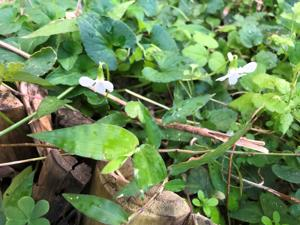

うるがいの話 ある日
最新: インサイダー情報【うるがいの話 ある日】とは 一日だけのプログです
『うるがいの話』の最新一日だけのプログで、通信料が少なく経済的だ。カニの画像をクリックすると全ての日付が載る『うるがいの話』サイトを表示します
|
|
【うるがいの話】 うるがい(ｳﾙｶﾞｲ urugai)とは、『もずくがに』の名前でとても大きくなります。 |
|---|---|
|
|
【カミマヤーの話】 猫のことを方言でマヤーといいます。カミマヤー（kamimayaa）とは、神の猫のことです。 |
|
【たながぁの音楽】 たながぁ（ﾀﾅｶﾞｰ tanagaa）とは手長えびのことで、何種類かあり大きいのは車 エビぐらいになります。 |

|
【ぶながぁの話】 ぶながぁ(ﾌﾞﾅｶﾞｰ bunagaa)とは、赤い髪の毛、赤い身体、そして身長は１ｍ２０ｃｍ ぐらい、川の蟹を食べているの目撃された。場所は沖縄県国頭郡大宜味村のと ある村僕の隣近所に住んでいる爺さんから、聞いた話です。 |
|
|
【ギーマの話】 ギーマ(giima)とは、山原の里山に咲くスズランに似た、 花を付けます。実は食べられます、 気が付くと口の周りが紫になっています。 |
2023年01月27日 (金）インサイダー情報
15:44

もう十年以上も前の事、私的にはあまり親しい間柄とは思っていない会社の人
から、内緒だけど北部で大きなテーマパークが作らるヨと私に打ち明けた。そ
の後、その人は会社を辞めて名護に勤め先を替えた。沖縄・北部テーマパーク
が２０２５年開業すべく来月の７日に起工式を行うとニュースがあった。ホー
ガセネタではなかった。コドモが、株を売って６万円の利益を上げた、才能あ
るかもと言っていた。投資に関する能力が無い私には興味がないが。今日は風
が強い、資源ごみの回収の日でペットボトルを包んだ袋が風に飛ばされ、道路
にまで飛ばされ不運な車はそれを、来る前の前で引っ掛かっていまい、ひきづ
った音をだしていた。５０メートルほどで、一旦車を止めて出て来た小母さん
車の後部を確認するが、ペットボトルが引っ掛った前部は確認せず、再出発す
る、当然音がなる。そして、また車は止まった。さらに、夕方、老人の買い物
客が多い果物さん屋の向かいの道路には、脚立付きの買い物籠が風に飛ばされ
移動していた。持ち主の小母さんが、その近辺でウロウロしていた。

１５時４０分 ビットコインの総資産 ￥８、６７７（↑４８）